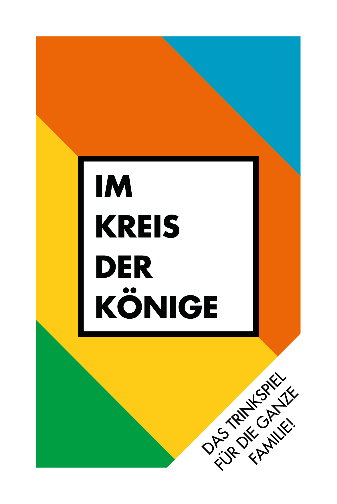

Willkommen zu „Im Kreis der Könige!“ Schön, dass du dich für das beste Kartenspiel entschieden hast! Lass uns dir kurz erklären, wie das hier abläuft: Reihum zieht jeder Spieler eine Karte. Das Spiel ist beendet, wenn alle Karten gezogen wurden.
Zwei Verteilen - Verteile 2 Getränke an eine oder zwei Personen deiner Wahl.
Drei Verteilen - Verteile 3 Getränke an eine bis drei Personen deiner Wahl.
Schild - Behalte diese Karte und wehre damit ein Getränk ab.
Fragenmeister - Wer bis zur nächstgezogenen Fragenmeisterkarte auf deine Fragen antwortet, muss trinken.
Selbst Trinken - Gönn dir ein Getränk!
Linker Nachbar - Dein linker Nachbar hat zu trinken!
Rechter Nachbar - Dein rechter Nachbar hat zu trinken!
Ich hab' noch nie - Du erzählst deinen Mitspielern etwas, das du noch nie getan hast. Diejenigen, die ebendieses schon getan haben, müssen trinken!
Ans Ohr fassen - Du fasst dir ans Ohr. Wer es dir als Letzter nachmacht, trinkt.
Regel - Du stellst eine Regel auf, die für das gesamte Spiel gilt. Wer die Regel bricht, trinkt!
Kategorie - Du wählst eine beliebige Kategorie aus (z.B. Automarken) und sagst der ersten Begriff dieser Kategorie. Deine Mitspieler zählen reihum weitere Begriffe auf bis jemand aufgibt oder einen Begriff wiederholt. Der Verlierer muss trinken!
Alle trinken - Alle haben zu Trinken!